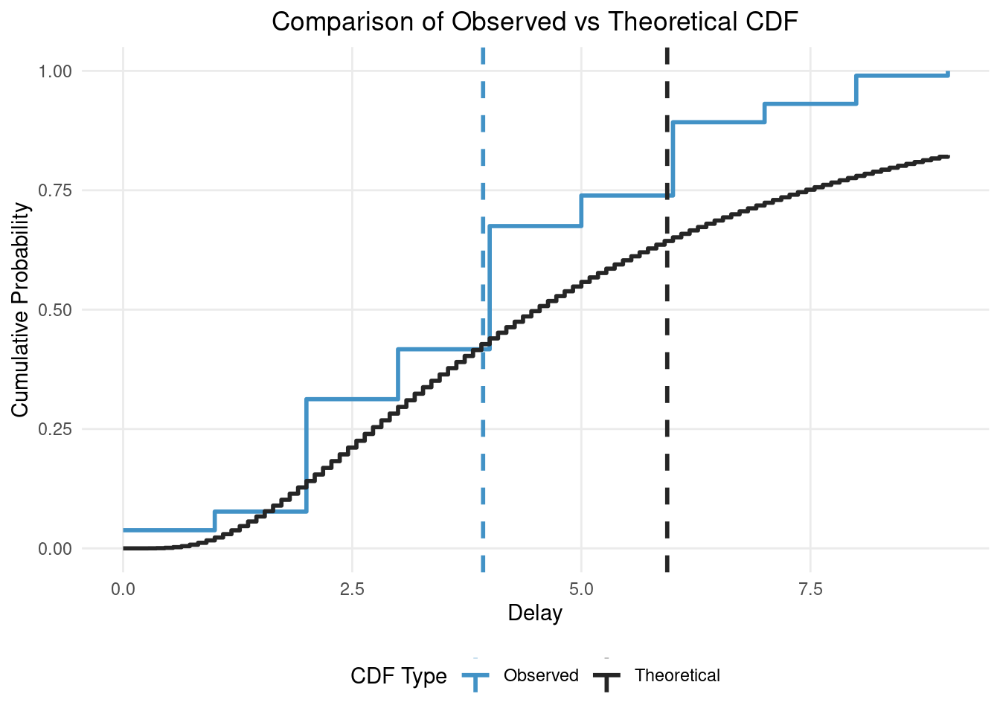

Fitting distributions using primarycensorseddist and cmdstan
Sam Abbott
Source:vignettes/fitting-dists-with-stan.Rmd
fitting-dists-with-stan.Rmd1 Introduction
1.1 What are we going to do in this Vignette
In this vignette, we’ll demonstrate how to use primarycensoreddist in conjunction with Stan for Bayesian inference of epidemiological delay distributions. We’ll cover the following key points:
- Simulating censored delay distribution data
- Fitting a naive model using cmdstan
- Evaluating the naive model’s performance
- Fitting an improved model using
primarycensoreddistfunctionality - Comparing the
primarycensoreddistmodel’s performance to the naive model
1.2 What might I need to know before starting
This vignette builds on the concepts introduced in the Getting Started with primarycensoreddist vignette and assumes familiarity with using Stan tools as covered in the How to use primarycensoreddist with Stan vignette.
2 Simulating censored and truncated delay distribution data
We’ll start by simulating some censored and truncated delay distribution data. We’ll use the rprimarycensoreddist function (actually we will use the rpcens alias for brevity).
set.seed(123) # For reproducibility
# Define the true distribution parameters
n <- 1000
meanlog <- 1.5
sdlog <- 0.75
# Generate varying pwindow, swindow, and obs_time lengths
pwindows <- sample(1, n, replace = TRUE)
swindows <- sample(1, n, replace = TRUE)
obs_times <- 10
# Function to generate a single sample
generate_sample <- function(pwindow, swindow, obs_time) {
rpcens(
1, rlnorm,
meanlog = meanlog, sdlog = sdlog,
pwindow = pwindow, swindow = swindow, D = obs_time
)
}
# Generate samples
samples <- mapply(generate_sample, pwindows, swindows, obs_times)
# Create initial data frame
delay_data <- data.frame(
pwindow = pwindows,
swindow = swindows,
obs_time = obs_times,
observed_delay = samples
)
head(delay_data)## pwindow swindow obs_time observed_delay
## 1 1 1 10 2
## 2 1 1 10 1
## 3 1 1 10 8
## 4 1 1 10 6
## 5 1 1 10 5
## 6 1 1 10 4
# Aggregate to unique combinations and count occurrences
# Aggregate to unique combinations and count occurrences
delay_counts <- delay_data |>
summarise(n = n(), .by = c(pwindow, swindow, obs_time, observed_delay))
head(delay_counts)## pwindow swindow obs_time observed_delay n
## 1 1 1 10 2 160
## 2 1 1 10 1 96
## 3 1 1 10 8 59
## 4 1 1 10 6 113
## 5 1 1 10 5 119
## 6 1 1 10 4 150
# Compare the samples with and without secondary censoring to the true
# distribution
# Calculate empirical CDF
empirical_cdf <- ecdf(samples)
# Create a sequence of x values for the theoretical CDF
x_seq <- seq(min(samples), max(samples), length.out = 100)
# Calculate theoretical CDF
theoretical_cdf <- plnorm(x_seq, meanlog = meanlog, sdlog = sdlog)
# Create a long format data frame for plotting
cdf_data <- data.frame(
x = rep(x_seq, 2),
probability = c(empirical_cdf(x_seq), theoretical_cdf),
type = rep(c("Observed", "Theoretical"), each = length(x_seq)),
stringsAsFactors = FALSE
)
# Plot
ggplot(cdf_data, aes(x = x, y = probability, color = type)) +
geom_step(linewidth = 1) +
scale_color_manual(
values = c(Observed = "#4292C6", Theoretical = "#252525")
) +
geom_vline(
aes(xintercept = mean(samples), color = "Observed"),
linetype = "dashed", linewidth = 1
) +
geom_vline(
aes(xintercept = exp(meanlog + sdlog^2 / 2), color = "Theoretical"),
linetype = "dashed", linewidth = 1
) +
labs(
title = "Comparison of Observed vs Theoretical CDF",
x = "Delay",
y = "Cumulative Probability",
color = "CDF Type"
) +
theme_minimal() +
theme(
panel.grid.minor = element_blank(),
plot.title = element_text(hjust = 0.5),
legend.position = "bottom"
)
We’ve aggregated the data to unique combinations of pwindow, swindow, and obs_time and counted the number of occurrences of each observed_delay for each combination. This is the data we will use to fit our model.
3 Fitting a naive model using cmdstan
We’ll start by fitting a naive model using cmdstan. We’ll use the cmdstanr package to interface with cmdstan. We define the model in a string and then write it to a file as in the How to use primarycensoreddist with Stan vignette.
writeLines(
"data {
int<lower=0> N; // number of observations
vector[N] y; // observed delays
vector[N] n; // number of occurrences for each delay
}
parameters {
real mu;
real<lower=0> sigma;
}
model {
// Priors
mu ~ normal(1, 1);
sigma ~ normal(0.5, 1);
// Likelihood
target += n .* lognormal_lpdf(y | mu, sigma);
}",
con = file.path(tempdir(), "naive_lognormal.stan")
)Now let’s compile the model
naive_model <- cmdstan_model(file.path(tempdir(), "naive_lognormal.stan"))and now let’s fit the compiled model.
naive_fit <- naive_model$sample(
data = list(
# Add a small constant to avoid log(0)
y = delay_counts$observed_delay + 1e-6,
n = delay_counts$n,
N = nrow(delay_counts)
),
chains = 4,
parallel_chains = 4,
show_messages = FALSE,
refresh = 0
)
naive_fit## Warning: NAs introduced by coercion## variable mean median sd mad q5 q95 rhat ess_bulk
## lp__ -28480.45 -28480.10 1.00 0.74 -28482.40 -28479.50 1.00 1999
## mu -0.10 -0.10 0.05 0.04 -0.18 -0.02 1.00 2691
## sigma 4.61 4.61 0.03 0.03 4.56 4.67 1.00 3820
## ess_tail
## NA
## 2310
## 2869We see that the model has converged and the diagnostics look good. However, just from the model posterior summary we see that we might not be very happy with the fit. mu is smaller than the target 1.5 and sigma is larger than the target 0.75.
4 Fitting an improved model using primarycensoreddist
We’ll now fit an improved model using the primarycensoreddist package. The main improvement is that we will use the primary_censored_dist_lpdf function to fit the model. This is the Stan version of the pcens() function and accounts for the primary and secondary censoring windows as well as the truncation. We encode that our primary distribution is a lognormal distribution by passing 1 as the dist_id parameter and that our primary event distribution is uniform by passing 1 as the primary_dist_id parameter. See the Stan documentation for more details on the primary_censored_dist_lpdf function.
writeLines(
"
functions {
#include primary_censored_dist.stan
#include expgrowth.stan
}
data {
int<lower=0> N; // number of observations
array[N] int<lower=0> y; // observed delays
array[N] int<lower=0> n; // number of occurrences for each delay
array[N] int<lower=0> pwindow; // primary censoring window
array[N] int<lower=0> swindow; // secondary censoring window
array[N] int<lower=0> D; // maximum delay
}
transformed data {
array[0] real primary_params;
}
parameters {
real mu;
real<lower=0> sigma;
}
model {
// Priors
mu ~ normal(1, 1);
sigma ~ normal(0.5, 0.5);
// Likelihood
for (i in 1:N) {
target += n[i] * primary_censored_dist_lpmf(
y[i] | 1, {mu, sigma},
pwindow[i], swindow[i], D[i],
1, primary_params
);
}
}",
con = file.path(tempdir(), "primarycensoreddist_lognormal.stan")
)Now let’s compile the model
primarycensoreddist_model <- cmdstan_model(
file.path(tempdir(), "primarycensoreddist_lognormal.stan"),
include_paths = pcd_stan_path()
)Now let’s fit the compiled model.
primarycensoreddist_fit <- primarycensoreddist_model$sample(
data = list(
y = delay_counts$observed_delay,
n = delay_counts$n,
pwindow = delay_counts$pwindow,
swindow = delay_counts$swindow,
D = delay_counts$obs_time,
N = nrow(delay_counts)
),
chains = 4,
parallel_chains = 4,
init = list( # we use this to resolve initialisation issues
list(mu = 1.5, sigma = 0.6),
list(mu = 1.5, sigma = 0.4),
list(mu = 1.5, sigma = 0.3),
list(mu = 1.5, sigma = 0.55)
),
refresh = 0,
show_messages = FALSE
)
primarycensoreddist_fit## variable mean median sd mad q5 q95 rhat ess_bulk ess_tail
## lp__ -2134.42 -2134.13 0.97 0.70 -2136.43 -2133.49 1.00 732 952
## mu 1.53 1.53 0.05 0.05 1.46 1.61 1.01 620 686
## sigma 0.77 0.77 0.04 0.04 0.71 0.83 1.00 633 641We see that the model has converged and the diagnostics look good. We also see that the posterior means are very near the true parameters and the 90% credible intervals include the true parameters.